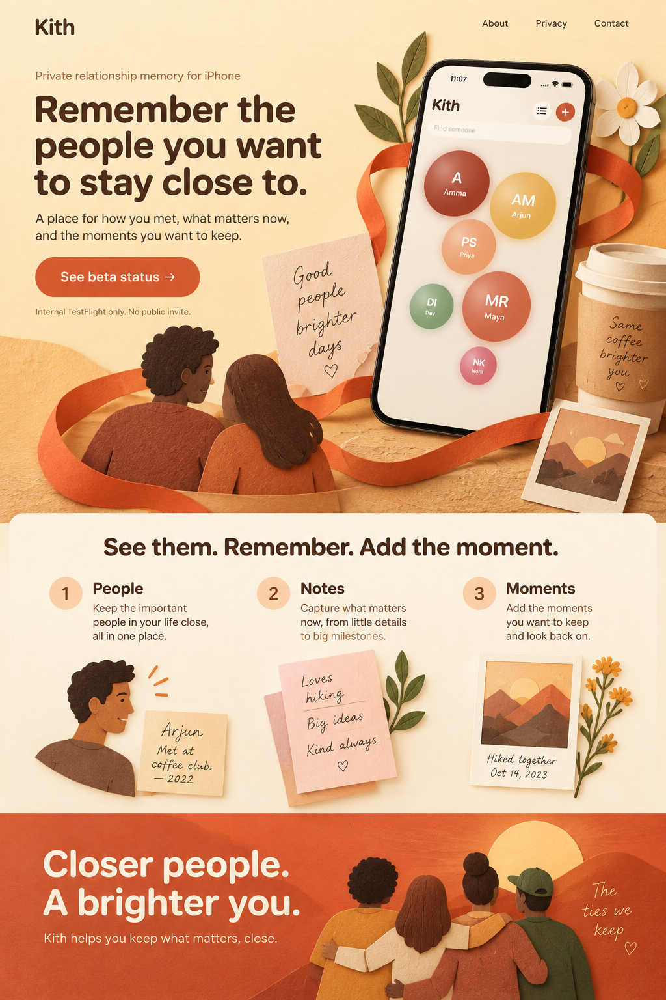
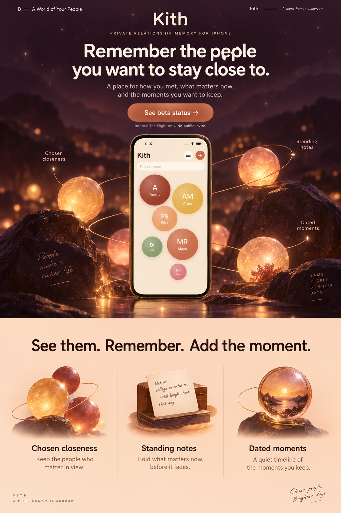
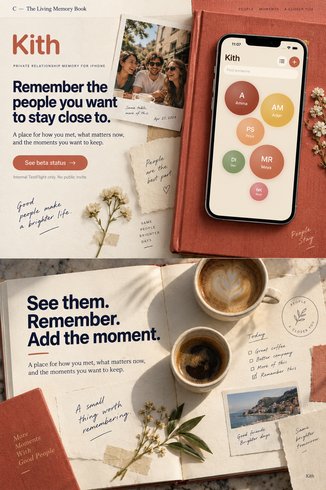

A — The Ties We Keep
Tactile paper sculpture, a connecting ribbon and warm, confident type. The real app stays prominent in an illustrated story.


The owner selected C — The Living Memory Book. These archived studies document the three original directions. The implementation uses exact product screens, semantic text, accessible controls and each app’s own identity.
Tactile paper sculpture, a connecting ribbon and warm, confident type. The real app stays prominent in an illustrated story.

An immersive constellation, warm lanterns and a centered product stage. Cinematic depth leads into a brighter explanatory chapter.

Owner selected. Bookcloth, photographs, notes and bold editorial spreads. A physical memory journal built around small human moments.
